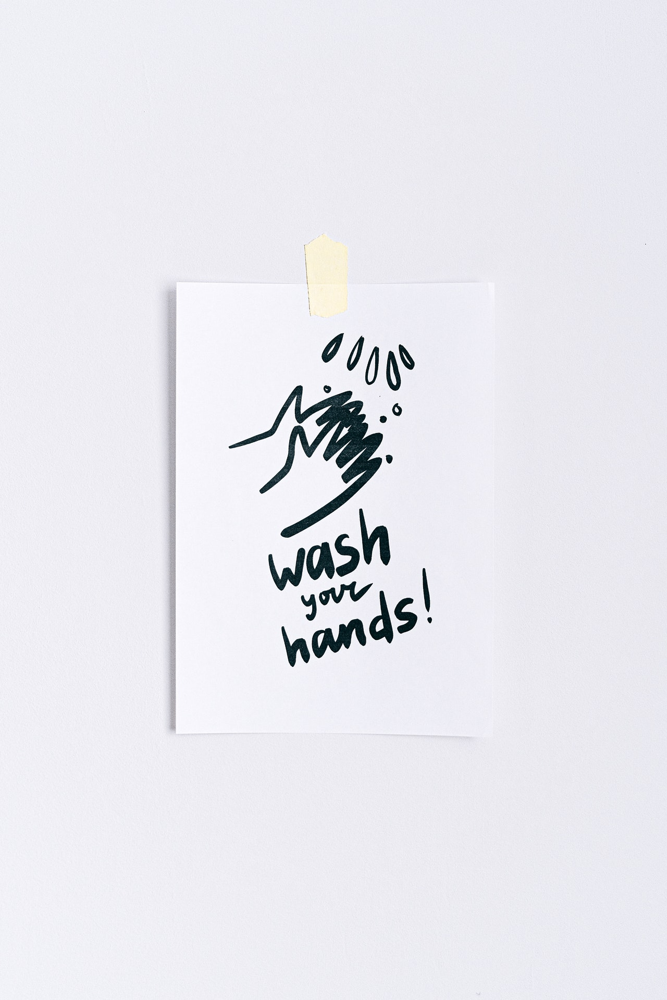

<!DOCTYPE html>
<html>

<head>
  <link href="style.css" type="text/css" rel="stylesheet">
  <link rel="stylesheet" href="https://use.fontawesome.com/releases/v5.15.1/css/all.css"
    integrity="sha384-vp86vTRFVJgpjF9jiIGPEEqYqlDwgyBgEF109VFjmqGmIY/Y4HV4d3Gp2irVfcrp" crossorigin="anonymous">
  <script src="jquery.js"></script>
  <script src="dataGenerator.js"></script>
</head>

<body>
  <script src="https://cdnjs.cloudflare.com/ajax/libs/moment.js/2.29.1/moment.min.js"
    integrity="sha512-qTXRIMyZIFb8iQcfjXWCO8+M5Tbc38Qi5WzdPOYZHIlZpzBHG3L3by84BBBOiRGiEb7KKtAOAs5qYdUiZiQNNQ=="
    crossorigin="anonymous"></script>
  <script>

    $(document).ready(function () {
      var $body = $('body');
      // three columns
      const $rightPart = $('<div class="rightPart"></div>').prependTo($body);
      var $middlePart = $('<div class="middlePart"></div>').prependTo($body);
      const $leftPart = $('<div class="leftPart"></div>').prependTo($body);
      // section that displays tweets
      const $posts = $('<div class="posts"></div>').prependTo($middlePart);
      // section that makes new tweets
      const $newPost = $('<div class="newPost"></div>').prependTo($middlePart);
      const $form = $('<form class="form"></form>').prependTo($newPost).submit(tweet);
      // left-sidebar section
      const $sidebar = $('<div class="sidebar"><ul><li><i class="fas fa-home"></i> Home</li><li><i class="fas fa-hashtag"></i> Explore</li><li><i class="fas fa-bell"></i> Notifications</li><li><i class="far fa-envelope"></i> Messages</li><li><i class="far fa-bookmark"></i> Bookmarks</li><li><i class="far fa-list-alt"></i> Lists</li><li><i class="far fa-user"></i> Profile</li><li><i class="fas fa-ellipsis-h"></i> More</li></ul></div>').appendTo($leftPart).on('click', loadTweets);
      const $logo = $('<span class="logo"><i class="fab fa-twitter"></i></span>').prependTo($leftPart).on('click', loadTweets);
      // user inputs for new tweets
      const $title = $('<h1 class="title">Twiddler</h1>').prependTo($newPost).on('click', loadTweets);
      var $usernameInput = $('<input type="text" required class="nameInput" placeholder="Tweet as">').prependTo($form);
      var $messageInput = $('<input class="messageInput" type="text" required placeholder="What\'s happening?"></input>').prependTo($form);
      const $links = $('<ul class="links"><li><i class="far fa-file-image"></i></li><li><i class="far fa-clone"></i></li><li><i class="fas fa-sort-amount-down"></i></li><li><i class="far fa-smile"></i></li><li><i class="far fa-calendar-check"></i></li></ul>').prependTo($newPost);
      // send new tweet button
      const $postButton = $('<button class="postButton" type="submit">Tweet</button > ').appendTo($form);
      // right-side section
      var $rightPicture = $(``).prependTo($rightPart);
      // load new tweets button
      var $loadTweets = $('<button class="load">Load more tweets</button>').on('click', loadTweets).prependTo($rightPart);

      // loads new tweets after DOM loads
      $body.ready(loadTweets);

      // posts new tweet
      function tweet(e) {
        e.preventDefault();
        const user = $usernameInput.val();
        const message = $messageInput.val();
        var $tweet = $('<div class="tweet"></div>');
        $tweet.html(`<div><span class="userName">${user}</span><span class="atUser"> @${user}</span><span class="postedTime"> ・${moment().fromNow()}</span><span class="messageLogo"><i class="fas fa-ellipsis-h"></i></span><span class="userMessage">${message}</span></div>`).prependTo($posts);
      }

      // Displays user-only tweets
      function userClicked(e) {
        // remove previous elements
        var prevPosts = document.querySelector(".posts");
        prevPosts.replaceChildren();
        // get the user id
        const name = e.currentTarget.innerText.split(" ");
        const userId = name[0];
        const userTweets = streams.users[userId];
        // iterate over user tweets
        for (let i = 0; i < userTweets.length; i++) {
          var msg = userTweets[i];
          var $userOnly = $('<div class="tweet"></div>').prependTo($posts);
          $userOnly.html(`<div><span class="userName">@${msg.user}</span><span class="atUser"> @${msg.user}</span><span class="postedTime"> ・${moment().fromNow()}</span>
          <span class="userMessage">${msg.message}</span></div>`);
        }
      }
      // Displays new tweets
      function loadTweets() {
        let streamsLength = streams.home.length;
        // remove previous contents from posts class
        var prevPosts = document.querySelector(".posts");
        prevPosts.replaceChildren();
        // iterate over tweets
        for (let i = 0; i < streamsLength; i++) {
          var tweet = streams.home[i];
          const name = tweet.user;
          const time = tweet.created_at;
          const message = tweet.message;
          var $tweet = $(`<div class="tweet"></div>`).on('click', userClicked);
          $tweet.html(`<div><span class="userName">${name}</span><span class="atUser"> @${name}</span><span class="postedTime"> ・${moment(time).fromNow()}</span><span class="messageLogo"><i class="fas fa-ellipsis-h"></i></span><span class="userMessage">${message}</span></div>`).prependTo($posts);
        }
      }
    });

  </script>
</body>

</html>